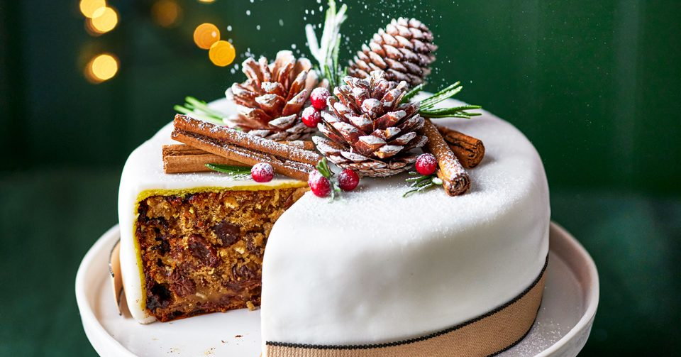

CHRISTMAS CAKE
5 hours
Serves 30
Medium
Christmas Cake is a traditional fruit cake with a rich, velvety texture that’s so full flavoured and moist it can be eaten plain. Usually Christmas Cakes need to be started the day before, with overnight soaking of dried fruit. But not mine!
500g Self Raising Flour
6 Eggs
375g margerine
2 bottles Lacto
300g brown sugar
4tbsp treacle
Juice of 1 lemon, 1 orange and 1 tangerine
Lemon and orange zest
1/2 tsp cinnammon powder
2 tbsp cocoa powder
200g dates
100g glaced cherries
500g black currants
300g sultana
200g hazelnuts
- Place all the dried fruit,cherries, juices, zest, and Lacto in a large bowl and let soak for 1hour.
- Preheat oven to 150°C. Grease and line a 21 – 22 cm / 8 – 9" round cake pan with baking paper (parchment paper) (7 cm / 2.75" tall).
- In an electric mixer, mix the butter and brown sugar with a K Beater until creamy and fluffy.
- Slowly, add the treacle and the eggs 1 at a time.
- Sift the flour and cocoa and add slowly to mixture until combined. Do not overbeat.
- With a wooden spoon, add the dried fruit mixture and mix until combined.
- Bake in oven for around 2 1/2 hours or until a skewer inserted into middle comes out clean with no batter on it.
- Remove from oven and cool for 20 minutes before transferring to cooling rack. Cool completely before serving.